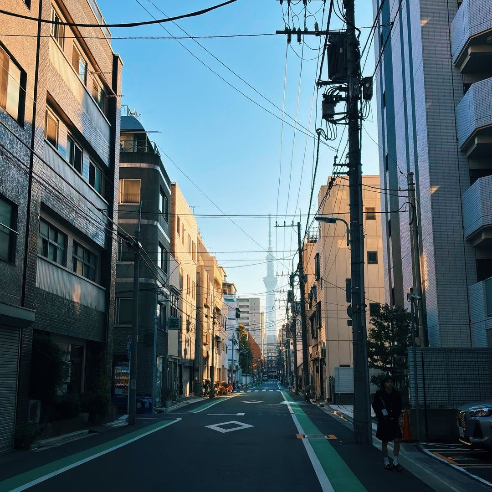
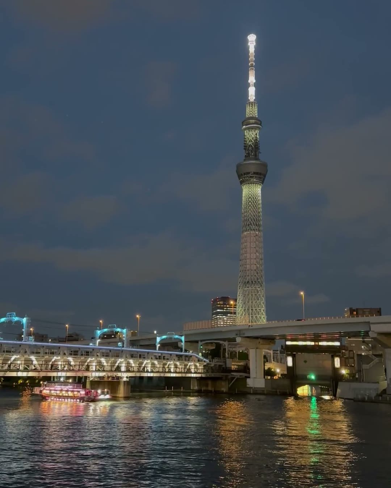
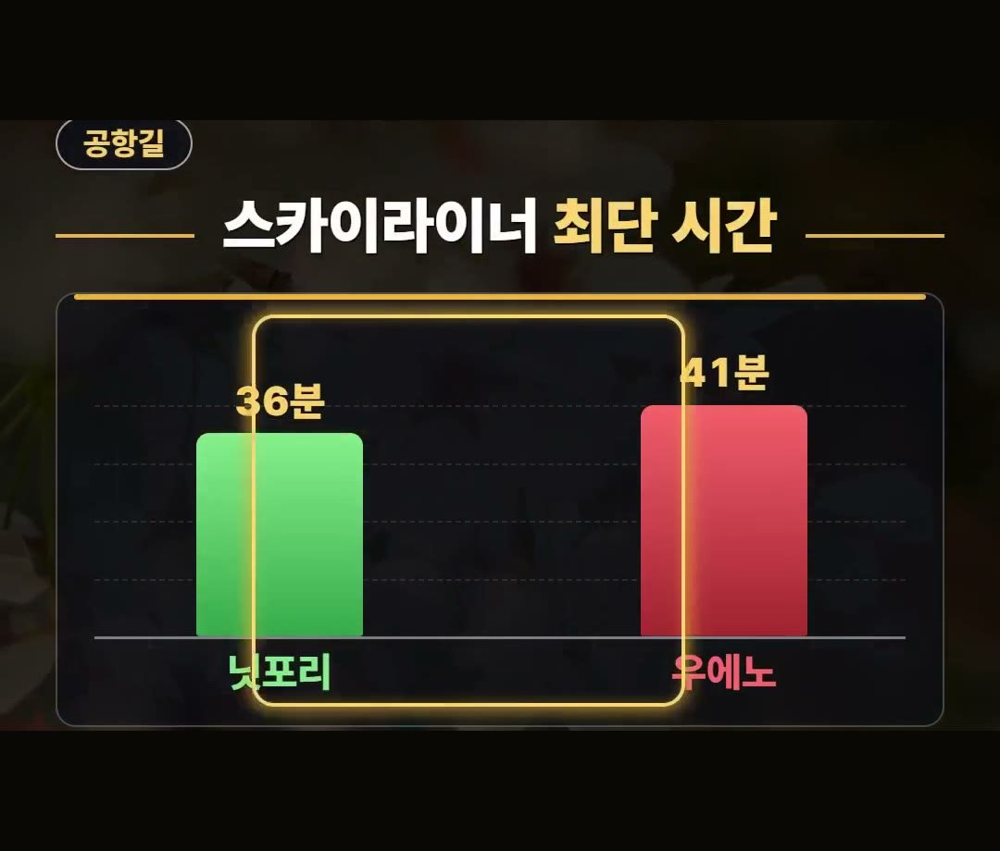
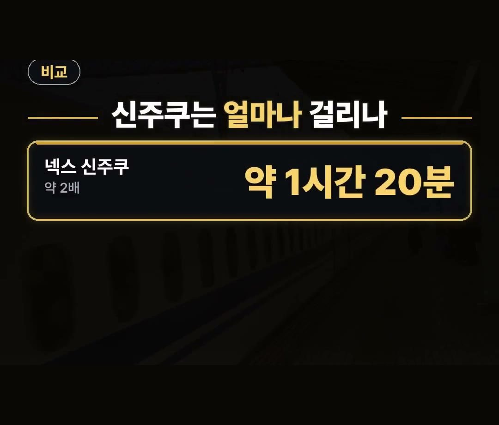
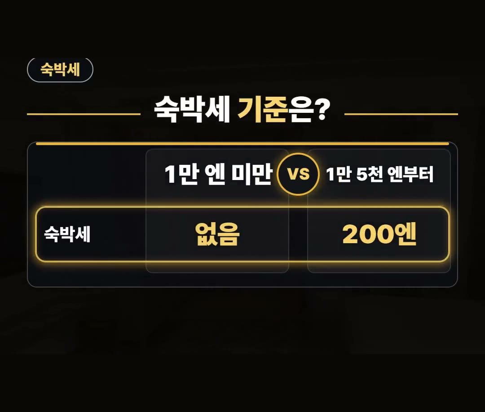
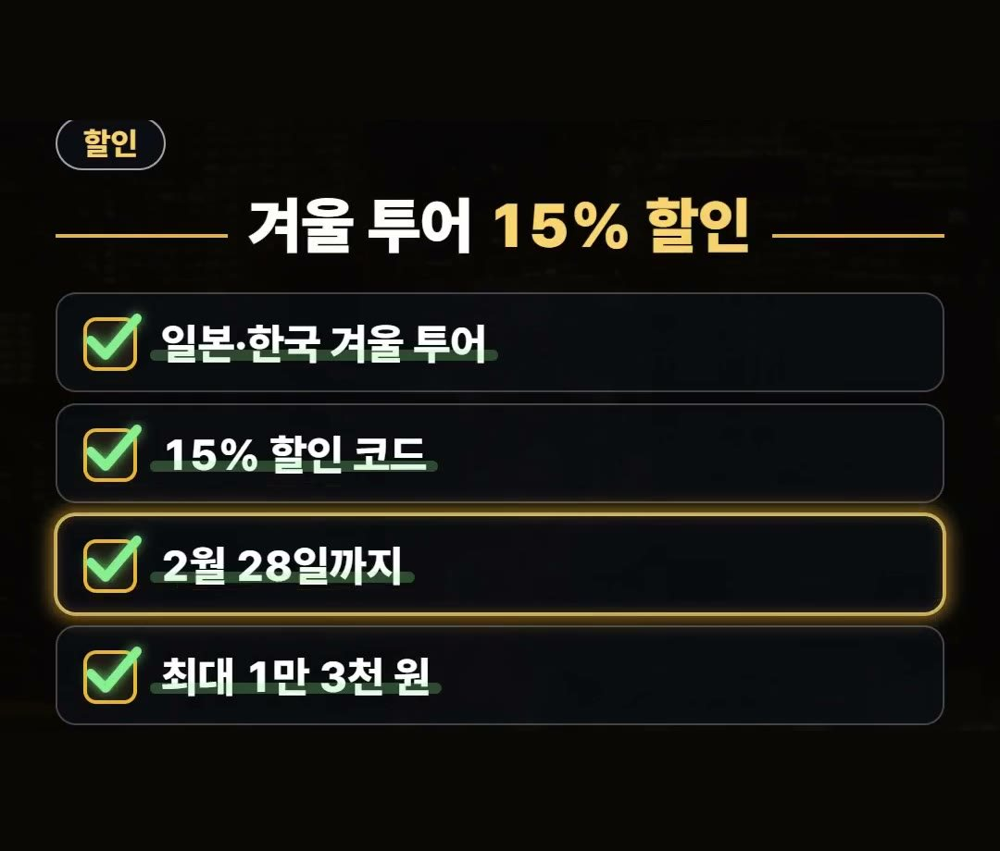

도쿄 여행 숙소, 신주쿠 말고 우에노인 이유 (공항 시간·숙박세 정리)
※ 이 글에는 제휴 링크가 포함되어 있으며, 링크를 통해 예약·구매하시면 일정 수수료를 받을 수 있습니다. (가격은 같습니다)
※ 이 포스팅은 쿠팡 파트너스 활동의 일환으로, 이에 따른 일정액의 수수료를 제공받습니다.
나리타 공항에 내려 캐리어를 끌고 숙소까지 가야 하는 상황을 떠올려 보세요.
숙소를 신주쿠에 잡았다면 그 길이 얼마나 걸릴까요?
이 글에서는 도쿄 여행 숙소를 고를 때 볼 공항까지의 시간과, 2026년 11월 기준 숙박세 기준을 차분히 정리했어요.
스카이라이너 최단 시간은 닛포리 36분, 우에노 41분이고, 신주쿠는 넥스로 약 1시간 20분이라는 것만 기억하세요!
숙박세는 2026년 11월 기준 1만 엔 미만 숙소는 없고, 1만 5천 엔부터 200엔이에요.
이 두 가지를 정리해 봤어요 ✈️

도쿄 여행 숙소 위치 비교, 공항 가는 길부터
보통 도쿄 여행 숙소를 고를 때는 신주쿠부터 살펴보는 경우가 많아요.
그런데 동네를 정하기 전에 나리타 공항에서 숙소까지 가는 길을 먼저 놓고 비교해 보면 기준이 하나 더 생겨요.
여행 첫날과 마지막 날에는 공항을 오가야 하니까요.
이 글에서 비교한 후보는 세 곳입니다.
- 닛포리
- 우에노
- 신주쿠

스카이라이너 최단 시간, 닛포리 36분·우에노 41분
먼저 닛포리와 우에노예요.
스카이라이너를 타면 공항에서 닛포리까지 최단 36분, 우에노까지 최단 41분이 걸려요.
여기서 숫자는 어디까지나 '최단 시간'이라는 점을 같이 기억해 두세요.
- 닛포리: 스카이라이너 최단 36분
- 우에노: 스카이라이너 최단 41분
두 동네 모두 40분 안팎이면 공항에 닿아요.
비행기 시간이 이른 날이나 도착해서 바로 쉬고 싶은 날에는 이 차이가 체감될 수 있어요.

도쿄 여행 숙소 신주쿠는 넥스로 약 1시간 20분
그럼 신주쿠는 어떨까요?
신주쿠는 넥스를 타고 약 1시간 20분이 걸려요.
닛포리·우에노의 스카이라이너 최단 시간과 견주면 약 2배 걸리는 셈이에요.
- 넥스 신주쿠: 약 1시간 20분
- 스카이라이너 닛포리: 최단 36분
- 스카이라이너 우에노: 최단 41분
물론 신주쿠에 숙소를 잡을 이유가 시간만은 아니겠지요.
다만 공항을 오가는 시간이 약 2배 차이 난다는 사실은 숙소를 정하기 전에 알고 있으면 좋아요.
이 글의 제목처럼 신주쿠 말고 우에노를 후보에 올려 볼 만한 이유가 바로 이 숫자예요.

도쿄여행 숙소 구하는법, 숙박세 기준도 확인
숙소 후보를 좁힐 때는 숙박세도 함께 봐 두세요.
2026년 11월 기준으로 도쿄 숙박세는 숙박 요금에 따라 갈려요.
- 1만 엔 미만 숙소: 숙박세 없음
- 1만 5천 엔부터: 숙박세 200엔
숙소를 고를 때 아래 순서로 확인해 보시면 편해요.
고를 때 볼 기준을 우리 식으로 3가지로 정리해 봤어요.
1. 나리타 공항까지 걸리는 시간 (닛포리 36분·우에노 41분·신주쿠 약 1시간 20분)
2. 1박 요금이 숙박세 기준에 해당하는지
3. 여행 일정에서 공항을 오가는 날이 언제인지

겨울 투어 15% 할인 코드
숙소를 정했다면 투어와 활동도 알아보게 되지요.
클룩에서 일본·한국 겨울 투어 및 활동에 쓸 수 있는 15% 할인 코드가 있어요.
- 대상: 일본·한국 겨울 투어 및 활동
- 할인: 15% 할인 코드
- 기간: 2월 28일까지
- 최대 1만 3천 원
할인은 최대 1만 3천 원까지라는 조건이 붙어 있어요.
기간도 2월 28일까지이니 일정이 겹치는지 먼저 살펴보세요.

정리
- 스카이라이너 최단 시간은 닛포리 36분, 우에노 41분이고, 신주쿠는 넥스로 약 1시간 20분이라 약 2배 걸려요.
- 2026년 11월 기준 도쿄 숙박세는 1만 엔 미만 숙소는 없고, 1만 5천 엔부터 200엔이에요.
- 일본·한국 겨울 투어 및 활동 15% 할인 코드는 2월 28일까지, 최대 1만 3천 원이에요.
예약 링크는 아래에 모아 두었어요.
지금 쓸 수 있는 여행사 할인
- 📶 해외 데이터는 이심으로 미리 · 마이리얼트립 마이심 「일본 50% 150원~」 · 2개 이상 추가 할인 (마이심 화면 표시 기준 · 11/27 확인 · 값은 바뀔 수 있음)
- 🎟 클룩 일본·한국 겨울 투어 15% 할인 코드 「TNA2026JPKRWINTER15OFF」 (최대 1만 3천 원 · 2월 28일까지)
- 🎟 클룩 일본 어트랙션 5% 할인 코드 「일본어트랙션5%」 (최소 구매 금액 없음 · 최대 4천 원 · 일부 상품 제외 · 쿠폰 취소 시 재발행 불가 · 예산 소진 시 조기 종료 · 12월 31일까지)
※ 여행사 사정으로 조건이 바뀌거나 일찍 끝날 수 있어요. 예약 전에 여행사 화면에서 한 번 더 확인하세요. (2026-11-27 확인)
TOKYO도쿄FREE📘 무료 도쿄 가이드 전자책공항·교통 · 돈 아끼는 법 · 맛집 · 벌금·주의 · 귀국 날 · 체크리스트무료로 보기 ›📌 2026년 11월 기준 정보예요. 가격은 환율·시기에 따라 달라질 수 있어요.
영상 화면: Pexels (Cheng, Gu Ko, Lin Cadmus, Nelemson G, Rin Gakusho, Roong Thongwichien)
사진: Pexels (Afham Hamsyari)